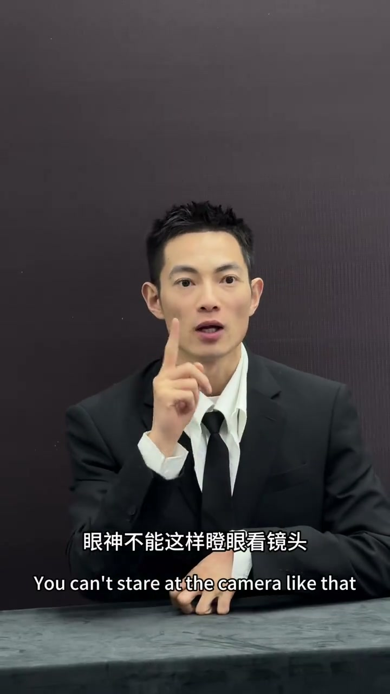
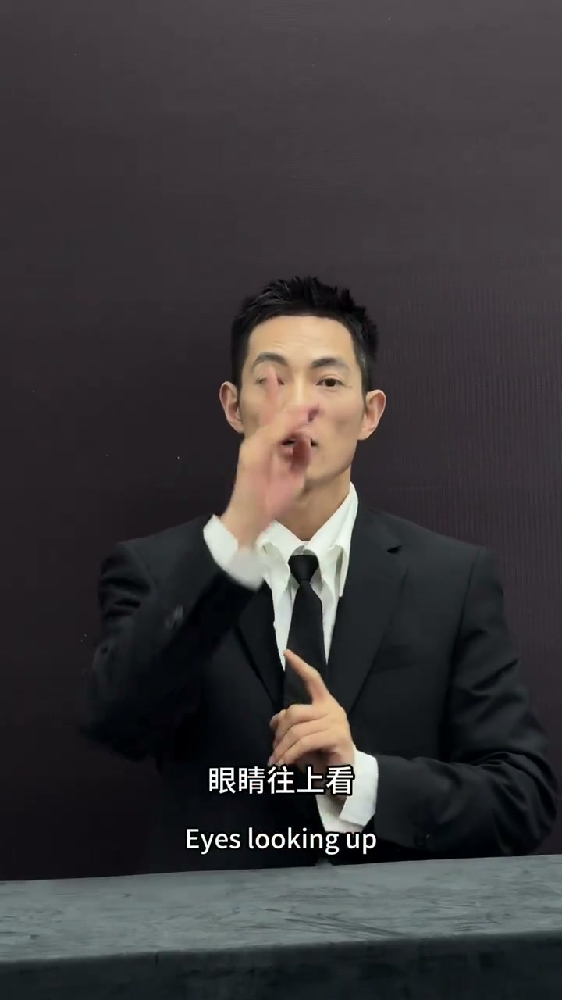
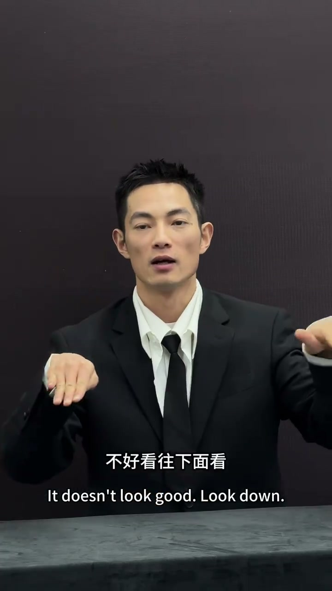
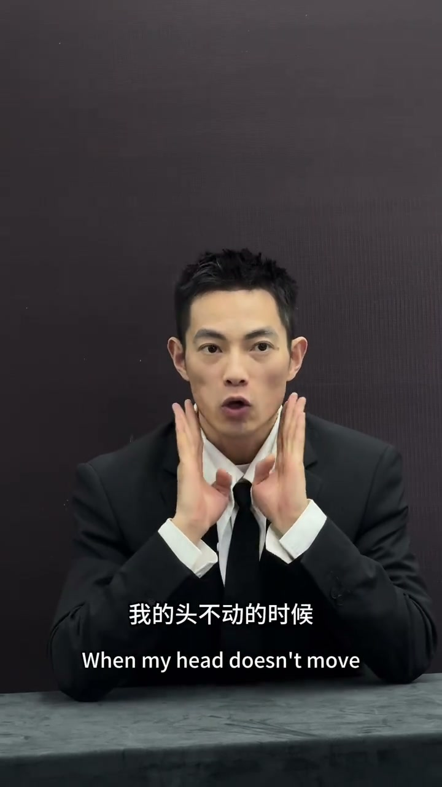
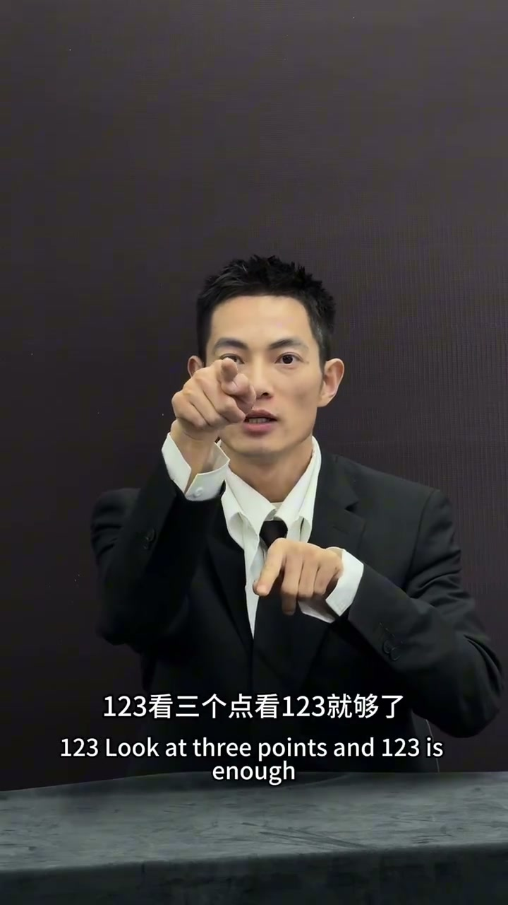

错误示范：瞪眼、闭眼、乱看
00:00眼神不能这样：瞪着眼睛看镜头——用力过猛，生硬不自然。
00:03也不要闭眼——闭眼像失误照、没精神。
00:05眼睛往上看、往两边看、往下看——很多人这样看，是不是眼睛太多了，不好拍。往上看翻眼白、往下看很多人是闭着眼睛的，这几个表情都不能做。

[00:01] 错误：瞪着眼睛看镜头
Wrong: staring wide-eyed at the lens

[00:06] 错误：眼睛往上/两边/下乱看
Wrong: eyes darting up, sideways, down
正确示范：放松看镜头
00:21正确做法：我头不动的时候，我的眼睛看镜头，放松——头定住，眼神松弛地看镜头。
00:25如果是双眼皮，刷眼皮不要往上，往下、放松，上下合一点点——眼神既有神又自然。

[00:22] 正确：头不动，眼睛看镜头，放松
Right: head still, eyes on the lens, relaxed

[00:28] 双眼皮往下放松，上下合一点点
Relax the double eyelid downward, closing the upper and lower lids just a little
定点法：防眼白
00:34眼睛可以往两边看，但是不能看太多。想中间是一个点，一二三，看三个点就够了。
00:39看到第四个点（四）就眼白越来越多了——所以眼睛不能往旁边看太多，也不能乱动，防止眼白。
[00:36] 定点：中间一个点，一二三看三个点
Fixed points: one in the center, then look at three points — one, two, three

[00:41] 看太多露眼白：最多三个点
Too much sclera visible: limit it to at most three points
拍摄眼神就三点：头不动、眼神放松、定点看——中间一个点，最多一二三，防眼白防乱飘。